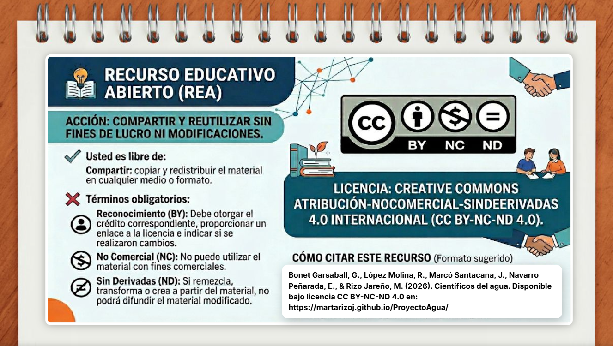

Científicos del agua
4º y 5º Primaria · 9-11 años


El agua: fuente de vida
Descubre por qué el agua es esencial para los seres vivos, la naturaleza y el futuro del planeta.
Para la vida
Esencial para todos los seres vivos, ya que regula funciones vitales
Para la naturaleza
Ecosistemas acuáticos, biodiversidad y bosques dependen del agua para su equilibrio
Nuestro cuerpo
Beber agua limpia es bueno para la salud, digestión y temperatura corporal
Para el planeta
El agua regula el clima, modela paisajes y es un recurso finito que debemos proteger
Momento de conexión
Toda la clase · 40 min totalCarta problemática
Leemos la carta que nos introduce al reto "Científicos del agua".
Temporalización 5 minVídeo motivador
¿Está limpia el agua que usamos cada día?
Temporalización 10 minLluvia de ideas
Compartimos ideas sobre cómo contaminamos el agua
Temporalización 10 min Participar MentimeterMisiones de científico
En grupos de 3 personas · Duración total: 1h 20minMisión 1: Identificamos
Clasificamos acciones que contaminan el agua
Temporalización 20 min Ir al GeniallyMisión 2: Investigamos
Analizamos situaciones reales de nuestro entorno
Temporalización 20 min Ir al GeniallyMisión 3: Creamos
Elaboramos nuestra propuesta de mejora (cartel, decálogo o vídeo)
Temporalización 40 min📤 Entrega tu propuesta
Reflexión y compromiso personal
Zona docente

📘 Descripción completa de las actividades — Haz clic en la imagen para acceder a la guía docente con todos los detalles, secuenciación, recursos y orientaciones didácticas.
Destinatarios
Está dirigido a alumnos de 4º y 5º de primaria, con edades comprendidas entre los 9 y 11 años, en el área de Ciencias Naturales.
Objetivo de aprendizaje
Comprender cómo se produce la contaminación del agua y relacionar el uso cotidiano del agua con acciones responsables que contribuyan a su cuidado.
Competencias trabajadas
- Competencia en el conocimiento y la interacción con el mundo físico.
- Competencia digital.
- Competencia en conciencia y sostenibilidad ambiental.
- Competencia social y cívica.
- Competencia para aprender a aprender.
Contenidos trabajados
Conceptuales:
- El agua como recurso natural.
- Causas y consecuencias de la contaminación del agua.
- Uso responsable y sostenible del agua.
Procedimentales:
- Análisis de situaciones cotidianas.
- Identificación de acciones contaminantes.
- Elaboración de propuestas de mejora.
Actitudinales:
- Responsabilidad ambiental.
- Compromiso con el cuidado del entorno.
- Trabajo cooperativo.
Aplicación del Diseño Universal para el Aprendizaje (DUA)
El diseño de este Recurso Educativo Abierto incorpora de manera planificada los principios del Diseño Universal para el Aprendizaje (DUA)...
Recursos audiovisuales, imágenes, textos estructurados, actividades interactivas.
Productos finales variados, trabajo cooperativo, roles adaptados.
Narrativa gamificada, reto significativo, compromiso personal.
Objetivos de Desarrollo Sostenible (ODS)
El REA se centra en tres ODS:
Contaminación del agua y cómo evitarla.
Cuidado del agua y consumo responsable.
Evaluación
Instrumentos de evaluación:
Rúbrica - Se utilizará para evaluar el producto final elaborado por el alumnado, permitiendo valorar tanto la comprensión conceptual como la calidad de la propuesta de mejora y el grado de participación cooperativa.
| Criterio | Nivel Alto | Nivel Medio | Nivel básico |
|---|---|---|---|
| Comprensión del problema | Explica claramente cómo se contamina el agua y sus consecuencias | Identifica causas pero con explicaciones limitadas | Presenta ideas poco claras o incompletas |
| Propuesta de mejora | Propone acciones realistas y aplicables | Propone acciones generales | Propuestas poco concretas |
| Creatividad y claridad | Producto atractivo, organizado y comprensible | Producto adecuado pero mejorable | Producto poco estructurado |
| Trabajo cooperativo | Participación equilibrada del grupo | Participación parcial | Participación desigual |
Lista de cotejo - La lista de cotejo se utilizará como instrumento de evaluación formativa durante el desarrollo de las actividades, permitiendo al docente registrar el progreso individual y grupal del alumnado.
| Indicador | Sí | En proceso | No |
|---|---|---|---|
| Participa activamente en las misiones propuestas | ☐ | ☐ | ☐ |
| Identifica correctamente acciones que contaminan el agua | ☐ | ☐ | ☐ |
| Explica la relación causa-consecuencia | ☐ | ☐ | ☐ |
| Aporta ideas en el trabajo cooperativo | ☐ | ☐ | ☐ |
| Respeta las opiniones del grupo | ☐ | ☐ | ☐ |
| Contribuye al producto final | ☐ | ☐ | ☐ |
Autoevaluación - La autoevaluación favorece la reflexión y la toma de conciencia sobre el propio aprendizaje, promoviendo la autorregulación y la transferencia de lo aprendido a la vida cotidiana.
| Ítem | 😊 | 😐 | 😕 |
|---|---|---|---|
| He comprendido cómo se contamina el agua | ☐ | ☐ | ☐ |
| Sé explicar cómo mis acciones pueden afectar al agua | ☐ | ☐ | ☐ |
| He participado activamente en las actividades | ☐ | ☐ | ☐ |
| He aportado ideas al trabajo en grupo | ☐ | ☐ | ☐ |
| He respetado las opiniones de mis compañeros | ☐ | ☐ | ☐ |
| He aprendido algo que puedo aplicar en mi vida diaria | ☐ | ☐ | ☐ |
Licencia y atribución
Este Recurso Educativo Abierto se comparte bajo licencia Creative Commons BY-NC-SA 4.0. Puedes usar, compartir y adaptar el material siempre que menciones la autoría, no lo uses con fines comerciales y lo compartas en los mismos términos.
